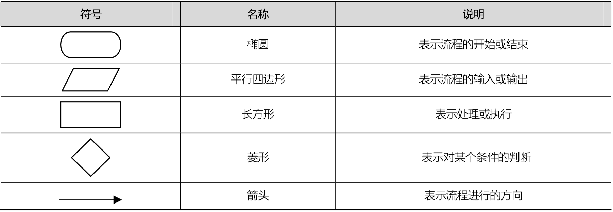

等价类划分法 ⭐
等价类划分法概述
等价类划分法是一种常用的黑盒测试方法，它主张从大量的数据中选择一部分数据用于测试，即尽可能使用最少的测试用例覆盖最多的数据，以发现更多的软件缺陷。
使用等价类划分法测试程序需要经过划分等价类和设计测试用例2个步骤，其中等价类可以划分为有效等价类与无效等价类。
有效等价类指有效值的集合，这些有效值是符合程序要求、合理且有意义的输入数据；
无效等价类指无效值的集合，这些无效值是不符合程序要求、不合理或无意义的输入数据。
在划分等价类时，需要遵守以下4个原则：
（1） 如果程序要求输入值是一个有限区间的值，则可以将输入数据划分为1个有效等价类和2个无效等价类，有效等价类为指定区间中的值的集合，2个无效等价类分别为有限区间两边的值的集合。例如，某程序要求输入值x的范围为[1,100]，则有效等价类为1<=x<=100，无效等价类为x<1和 x>100。
（2） 如果程序要求输入值“必须成立”，则可以将输入数据划分为1个有效等价类和1个无效等价类。例如，某程序要求密码正确，则正确的密码属于有效等价类，错误的密码属于无效等价类。
（3） 如果程序要求输入值是一组可能的值，或者要求输入值必须符合某个条件，则可以将输入数据划分为1个有效等价类和1个无效等价类。例如，某程序要求输入数据必须是以数字开头的字符串，则以数字开头的字符串属于有效等价类，不以数字开头的字符串属于无效等价类。
（4） 如果在某一个等价类中，每个输入值在程序中的处理方式都不相同，则应将该等价类划分成更小的等价类，并建立等价类表。
实例一：QQ账号合法性的等价类划分
要求：QQ账号是6~10位自然数，在登录QQ时，根据QQ账号的长度判断QQ账号的合法性。
| 等价类 | 说明 |
|---|---|
| 有效等价类 | 6~10位自然数 |
| 无效等价类 | 少于6位自然数（包括0位） |
| 无效等价类 | 多于10位自然数 |
| 无效等价类 | 6~10位非自然数 |
| 无效等价类 | 少于6位非自然数（包括0位） |
| 无效等价类 | 多于10位非自然数 |
基于等价类划分法设计QQ账号的测试用例：
| 测试用例编号 | 用例标题 | 项目/模块 | 优先级 | 前置条件 | 测试步骤 | 测试数据 | 预期结果 |
|---|---|---|---|---|---|---|---|
| Tec_acc_001 | 账号适长 | 账号 | / | 已打开… | 先打开… | 12345678 | 账号合法 |
| Tec_acc_002 | 账号过短 | … | / | … | … | 123 | 不合法 |
| … | 账号过长 | / | 12345678910 | … | |||
| … | 适长非法 | / | abc«< | … | |||
| … | 过短非法 | / | 空值 | … | |||
| Tec_acc_006 | 过长非法 | / | abc«<abc«< | … |
实例二：三角形问题的等价类划分
要求：程序要求输入3个数作为三角形的3条边，判断这3个数构成的是一般三角形、等边三角形、等腰三角形，还是无法构成三角形。
| 等价类 | 说明 |
|---|---|
| 有效等价类 | 输入3个数 |
| 无效等价类 | 输入0个数 |
| 无效等价类 | 输入1个数 |
| 无效等价类 | 输入2个数 |
| 无效等价类 | 输入大于3个数 |
在上述有效等价类“输入3个数”中，又可以分为：
| 等价类 | 说明 |
|---|---|
| 有效等价类 | 3个数都是正数 |
| 无效等价类 | 3个数中有1个数小于0 |
| 无效等价类 | 3个数中有2个数小于0 |
| 无效等价类 | 3个数都小于0 |
在上述有效等价类“3个数都是正数”中，又可以分为：
| 等价类 | 说明 |
|---|---|
| 有效等价类 | 任意2个数之和大于第3个数（能构成三角形） |
| 无效等价类 | 有2个数之和小于第3个数（不能构成三角形） |
在上述有效等价类“任意2个数之和大于第3个数”中，又可以分为：
| 等价类 | 说明 |
|---|---|
| 有效等价类 | 恰好只有2个数相等（等腰三角形） |
| 有效等价类 | 3个数均相等（等边三角形） |
| 无效等价类 | 3个数均不相等（普通三角形） |
综上，可以总结三角形问题的等价类表如下：
基于等价类划分法设计三角形问题的测试用例：
实例三：余额宝提现的等价类划分
余额宝的提现方式有2种：快速到账（2小时），每日最高提现额度为 10000元；普通到账，可提取金额为余额宝中的最大余额，但到账时间会慢一些。
对余额宝的提现功能进行测试，首先对余额宝提现功能进行等价类划分。
对于快速到账：
| 等价类 | 说明 |
|---|---|
| 有效等价类 | 0 < 提现金额 <= 10000 |
| 无效等价类 | 提现金额 <= 0 |
| 无效等价类 | 提现金额 >= 10000 |
| 无效等价类 | 提现金额 >= 余额 |
对于普通到账：
| 等价类 | 说明 |
|---|---|
| 有效等价类 | 0 < 提现金额 <= 余额 |
| 无效等价类 | 提现金额 <= 0 |
| 无效等价类 | 提现金额 >= 余额 |
基于等价类划分法设计余额宝提现的测试用例：
边界值分析法 ⭐
边界值分析法概述
边界值分析法是对软件的输入或输出边界进行测试的一种方法，它通常作为等价类划分法的一种补充测试方法。对于软件来说，错误经常发生在输入或输出值的关键点，即从符合需求到不符合需求的关键点，因此边界值分析法在等价类的边界上执行软件测试工作，它的所有测试用例都是在等价类的边界处设计的。
在等价类划分法中，无论是输入值还是输出值，都会有多个边界，而边界值分析法是在这些边界附近寻找某些点作为测试值，而不是在等价类内部选择测试值。在使用边界值分析法时，可以通过确定边界的3个点来设计测试用例，这3个点分别是上点、离点和内点。
上点是指边界上的点，离点是指距离边界最近的点，内点是指需求给定范围内的点。
在等价类中选择边界值时，如果输入条件规定了取值范围或取值个数，则在选取边界值时可选取5个测试值或7个测试值。
如果选取5个测试值，即在2个边界值内选取5个测试值：最小值、略大于最小值、正常值、略小于最大值、最大值。例如，输入条件规定取值范围为1~100，则可以选取1、1.1、50、99.9和100作为测试值。
如果选取7个测试值，则在取值范围两侧再各选取一个测试值，这7个测试值分别是略小于最小值、最小值、略大于最小值、正常值、略小于最大值、最大值、略大于最大值，对于上述输入条件，可选取0.9、1、1.1、50、99.9、100和100.1作为测试值。
如果软件要求输入或输出是一组有序集合（如数组、链表等），则可选取第一个和最后一个元素作为测试值。如果被测试程序中有循环，则可选取第0次、第1次与最后2次循环作为测试值。除了上述讲解到的边界值选取外，软件还有其他边界值的选取情况，在对软件进行测试时，要仔细分析软件规格需求，找出其可能的边界条件。
边界值分析法只在边界取值上考虑测试的有效性。相对于等价类划分法来说，它的执行更加简单易行，但缺乏充分性，不能整体、全面地测试软件，因此它通常作为等价类划分法的补充测试方法。
实例一：QQ账号合法性的边界值分析
要求：QQ账号是6~10位自然数，在登录QQ时，根据QQ账号的长度判断QQ账号的合法性。
测试用例如下所示：
| 测试用例编号 | 用例标题 | 项目/模块 | 优先级 | 前置条件 | 测试步骤 | 测试数据 | 预测结果 |
|---|---|---|---|---|---|---|---|
| Tec_acc_001 | 上点（6） | 账号 | / | 已打开… | 先打开… | 123456 | 合法 |
| Tec_acc_002 | 上点（10） | … | / | … | … | 1234567890 | 合法 |
| … | 离点（5） | / | 12345 | 不合法 | |||
| … | 离点（7） | / | 1234567 | 合法 | |||
| … | 离点（9） | / | 123456789 | 合法 | |||
| Tec_acc_006 | 离点（11） | / | 12345678910 | 不合法 | |||
| Tec_acc_007 | 内点（8） | / | 12345678 | 合法 |
实例二：三角形问题的边界值分析
要求：输入3个数作为三角形的3条边，判断这3个数构成的是一般三角形、等边三角形、等腰三角形，还是无法构成三角形。
要求：三边取值范围为1~100。
实例三：余额宝提现的边界值分析
要求：快速到账额度为 10000元；普通到账可提取金额为余额宝中的最大余额。
因果图法与决策表法
等价类划分法与边界值分析法主要侧重于输入条件，却没有考虑输入条件之间的关系，例如，组合关系、约束关系等。由于程序输入之间有作用关系，等价类划分法与边界值分析法很难描述输入之间的作用关系，无法保证测试效果，所以需要学习一种新的方法来描述多个输入之间的作用关系，即因果图法。
因果图法概述
在因果图法中，原因表示输入条件，结果表示输入执行后得到的输出，最终根据因果图法的分析绘制决策表。决策表法适用于检查程序输入条件的各种组合情况。
例如，某一软件要求输入的地址具体到市区，例如 “北京→昌平区” “天津→南开区”，其中第二个输入受到第一个输入的约束，输人的城区只能在输入的城市中选择，否则输入的地址无效。
像这样多个输入之间有相互制约关系的情况，就无法使用等价类划分法和边界值分析法设计测试用例。因果图法就是为了解决多个输入之间的作用关系而产生的测试用例设计方法。
因果图中的关系
因果图使用一些简单的逻辑符号和直线将程序的原因（输入）与结果（输出）连接起来，一般原因用c表示，结果用 e 表示，c 与 e 可以取值 “0” 或 “1”，其中 “0” 表示状态不出现，“1” 表示状态出现。
输入与输出之间有恒等、非、或、与这4种关系。
恒等： 在恒等关系中，要求程序有一个输入和一个输出，输出与输入保持一致。若c为1，则e也为1；若c为0，则e也为0。
非： 使用符号“~”表示，在非关系中，要求程序有一个输入和一个输出，输出是输入的取反。若为1，则e为0；若c为0，则e为1。
或： 使用符号“∨”表示，或关系可以有多个输入，只要这些输入中有一个为1，则输出为1，否则输出为0。
与： 使用符号“∧”表示，与关系也可以有多个输入，但只有这些输入全部为1，输出才能为1，否则输出为0。
多个输入之间的约束关系
在软件测试中，如果程序有多个输入，那么除了输入与输出之间的作用关系外，这些输入之间往往也会存在某些依赖关系，即某些输入条件本身不能同时出现或某一种输入可能会影响其他输入。
例如，某一软化用于统计体检信息，在输入个人信息时，性别只能输入男或女，这2种输入不能同时存在，而且如果输入性别为女，那么体检项就会受到限制。
这些依赖关系在软件测试中称为“约束”，约束的类别可分为4种：异、或、唯一、要求。
E（Exclusive，异）： a和b中最多只能有一个为1，即a和b 不能同时为1。
I（At Least One，或）： a、b和c中至少有一个必须是1，即a、b、c不能同时为0。
O（One and Only One，唯一）： a和b中有且仅有一个为1。
R（Require，要求）： a和b必须保持一致，即a为1时，b也必须为1， a为0时，b也必须为0。
强制约束关系
除了输入条件，输出条件之间也会相互约束。输出条件的约束只有一种，即 M（Mask，强制）。
在输出条件的强制约束关系中，如果a为1，则b强制为0，如果a为0，则b强制为1。
决策表法概述
在实际测试中，如果输入条件较多，再加上各种输人与输出之间的相互作用关系，画出的因果图就会比较复杂，让人不易理解。为了避免这种情况出现，测试人员往往使用决策表法代替因果图法。
决策表也称为判定表，其实质就是一种逻辑表。
在程序设计发展初期，决策表就已经被当作程序开发的辅助工具了，用于帮助开发人员设计开发模式和整理开发流程，因为它可以把复杂的逻辑关系和多种条件组合的情况表达得既具体又明确，利用决策表可以设计出完整的测试用例集合。
决策表通常由4个部分组成，具体如下。
条件桩： 用于列出问题的所有条件，除了某些问题对条件的先后次序有要求外，通常决策表中所列条件的先后次序都无关紧要。
条件项： 条件桩的所有可能取值。
动作桩： 对问题可能采取的动作，这些动作一般没有先后次序之分。
动作项： 指出在条件项的各组取值情况下应采取的动作。
有些工作可能是重复的、无意义的，如表 2-14 中的规则 1 与规则 2，在前两个问题取值相同的情况下，无论是否对内容不理解，建议都是 “停止阅读并休息”，因此第三个问题就称为无关条件项，可以将这两条规则合并，使用 “-” 表示。
实例一：零食自动售货机售货情况的因果图与决策表绘制
假设零食自动售货机主要售卖糖果和饼干，其中糖果和饼干的单价均为5角，**每次只能投入一枚5角的硬币或一枚1元的硬币，并按“糖果”按钮或“饼干”按钮进行购买，不能同时按“糖果”按钮和“饼干”按钮。**零食自动售货机的具体使用说明如下。
- 如果售货机中没有5角的硬币以供找回，则亮红灯，提示顾客此种情况下不要投入1元的硬币；如果有5角的硬币以供找回，则红灯不亮。
- 如果顾客投入5角的硬币并按“糖果”按钮或“饼干”按钮，则送出糖果或饼干。
- 如果顾客投入1元的硬币并按“糖果”按钮或“饼干”按钮，且售货机有5角的零钱找回，则退出一枚5角的硬币并送出糖果或饼干。
- 如果顾客投入1元的硬币并按“糖果”按钮或“饼干”按钮，且售货机没有5角的零钱找回，则亮红灯，然后退出1元的硬币，无法送出糖果或饼干。
绘制决策表：
简化决策表：
实例二：三角形问题的因果图与决策表绘制
假设三角形的3边分别为a、b、c，则三角形问题有4个原因（是否构成三角形、a=b?、b=c?、c=a?）和5个结果（不构成三角形、一般三角形、等腰三角形、等边三角形、不符合逻辑）。
每个原因可取值“Y”和“N”，因此共有2^4^=16条规则。
设计测试用例：
实例三：工资发放情况的因果图与决策表绘制
某公司的薪资管理制度如下：员工工资分为年薪制与月薪制2种，员工的犯错类型包括普通错误与严重错误2种，如果是年薪制的员工，犯普通错误扣款2%，犯严重错误扣款4%；如果是月薪制的员工，犯普通错误扣款4%，犯严重错误扣款8%。该公司编写了一款软件用于员工工资的计算发放，现在要对该软件进行测试。
有4个原因，每个原因有“Y”和“N”2个取值，理论上可以组成2^4^=16条规则。由于c1与c2不能并存，所以只有8条规则。
根据公司的薪资情况可设计测试用例。
正交实验设计法
正交实验设计法概述
实际的软件测试中，测试的软件通常很复杂，很难从软件的需求规格说明中得出一一对应的输入、输出关系，不易划分出等价类，如果使用因果图法，则画出的因果图可能会很庞大。为了合理、有效地进行测试，可以利用正交实验法设计测试用例。
正交实验法是一种高效、快速、经济的实验设计方法。
正交实验设计法（Orthogonal Experimental Design）是指从大量的实验点中挑选出适量的、有代表性的点，依据 Galois 理论导出“正交表”，从而合理地安排实验的一种实验设计方法。在软件测试中，如果软件比较复杂，也可以利用正交实验法设计测试用例对软件进行测试。
正交实验设计法包含3个关键因素，具体如下。
- 指标： 判断实验结果优劣的标准。
- 因子： 也称为因素，是指所有影响实验指标的条件。
- 因子的状态： 也叫因子的水平，它是指因子变量的取值。
利用正交实验设计法设计测试用例时，按照 ① 提取因子，构造因子——状态表，② 加权筛选，简化因子——状态表，③ 构建正交表，设计测试用例 3 个步骤进行。正交表的表现形式如下：
- L 表示正交表。
- n 为正交表的行数，每一行可以用于设计一个测试用例，因此行数 n 也表示可以设计的测试用例数。
- c 表示正交实验的因子数目，即正交表的列数，因此正交表是一个 n 行 c 列的表。
- t 称为水平数，表示每个因子能够取得的最大值，即因子有多少个状态。
例如 L4(2^3^) 是较为简单的正交表，它表示该实验有 3 个因子，每个因子有 2 个状态，可以做 4 次实验。如果用 0 和 1 表示每个因子的2种状态，正常情况下需要设计 2^3^ = 8 个测试用例。
根据正交表查询网站 support.sas.com/techsup/technote/ts723_Designs.txt 可以得知，使用正交表只需要设计 4 个测试用例也可以达到相同效果，则该正交表就是一个 4 行 3 列的表。
在实际软件测试中，大多数情况下，软件有多个因子，每个因子的状态数目都不相同，即各列的水平数不等，这样的正交表称为混合正交表，例如 L8(2^4^*4^1^)，这个正交表表示有 4 个因子有 2 种状态，有 1 个因子有 4 种状态。
对于受多因子、多水平影响的软件，正交实验法可以高效、适量地生成测试用例，减少测试工作量，并且利用正交实验法得到的测试用例具有一定的覆盖率，检错率可在50%以上。正交实验法虽然好用，但在选择正交表时要注意先确定实验因子、因子的状态及它们之间的交互作用，同时还要考虑实验的精度要求、费用、时长等因素。
实例一：微信Web页面运行环境正交实验设计
微信是一款手机App软件，但也有Web版微信可以登录。如果要测试微信Web页面运行环境，需要考虑多种因素，在众多的因素中，可以选出几个影响比较大的因素，例如服务器、操作系统、插件和浏览器。对于选出的4个影响因素，每个因素又有不同的取值。同样，在每个囚素的多个取值中，可以选出几个比较重要的值，具体如下。
- 服务器：IIS、Apache、Jetty。
- 操作系统：Windows 7、Windows 10、Linux g
- 插件：无、小程序、微信插件。
- 浏览器：IE11、Chrome、Firefox。
正交实验法虽然高效，但并不是对每种软件测试都适用。在实际测试中，正交实验法其实使用得比较少。
实例二：用户筛选功能正交实验设计
假设有一个招聘软件，招聘人员可以根据多个因素来筛选求职者。下面选择城市、招聘岗位、学历、计算机等级和工作经验作为关键因素，每个因素都有不同的取值，具体如下。
城市：北京、上海、深圳、广州。
招聘岗位：产品运营、产品经理、软件测试、软件工程师。
学历：高中、专科、本科、研究生。
计算机等级：计算机一级、计算机二级、计算机三级、计算机四级。
工作经验：1年、2年、3年、4年。
场景法
场景法概述
场景法也叫流程图法，是指通过模拟用户操作软件时的场景来对系统的功能或业务流程进行测试。场景法通常用于测试多个功能之间的组合使用情况，以及用于集成测试、系统测试和验收测试阶段。
根据用户操作流程的正确性来划分时，场景法将用户的操作流程分为基本流和备选流。基本流也称为有效流，用来模拟用户正确的操作流程；备选流也称为无效流、错误流，用来模拟用户错误的操作流程。
由图可知，基本流有1条，备选流有4条。备选流可以从基本流开始，例如备选流1、备选流2和备选流3；备选流也可以从备选流开始，例如备选流4。测试场景如下：
- 场景1：基本流。
- 场景2：基本流→备选流1。
- 场景3：基本流→备选流1→备选流2。
- 场景4：基本流→备选流1→备选流3。
- 场景5：基本流→备选流1→备选流3→备选流4。
- 场景6：基本流→备选流2。
- 场景7：基本流→备选流3。
- 场景8：基本流→备选流3→备选流4。
在场景法中每一个场景是一条流程路径，根据流程路径的数量即可设计测试用例。 使用场景法设计测试用例可以按照以下4个步骤进行：
- 步骤1：分析需求规格说明书。
- 步骤2：根据需求规格说明书绘制流程图。
- 步骤3：根据流程图确定测试场景。
- 步骤4：根据测试场景设计测试用例。
在绘制流程图时，首先需要确定测试场景中的关键业务以及各个业务之间的操作顺序，然后用箭头连接即可。
实例一：电商网站购物场景分析
如今电商行业的发展非常迅速，许多公司开始研发电商网站，为用户提供更多的购物渠道。
假设某公司研发了一个电商网站，现需要测试人员按照 “注册→登录→挑选商品→将商品加入购物车→支付→查看订单” 的流程进行测试。
在使用电商网站进行购物时，首先进行注册，如果注册失败，则需要重新注册，直到注册成功后才可以登录电商网站。如果登录失败，则需要重新登录。
该电商网站的支付方式有3种，分别是微信、银行卡和支付宝，如果用这3种方式都支付失败，则需要返回支付环节重新支付，直到支付成功后才能查看订单。
分析图可知，基本流有1条，备选流有3条，具体如下。
- 基本流：注册→登录→挑选商品→将商品加入购物车→支付→查看订单。
- 备选流1：注册失败。
- 备选流2：注册成功→登录失败。
- 备选流3：注册成功→登录成功→挑选商品→将商品加入购物车→支付失败。
通过对基本流和备选流进行分析，可以得出4个测试场景，具体如下。
- 场景1：基本流。
- 场景2：基本流+备选流1。
- 场景3：基本流+备选流2。
- 场景4：基本流+备选流3。
- 基本流+备选流1+备选流2+备选流3
多次注册后成功，多次登录后成功，支付均失败
- 基本流+备选流1+备选流2
- 基本流+备选流1+备选流3
- 基本流+备选流2+备选流3
在使用场景法设计测试用例时，每一个场景对应一个测试用例，根据4个测试场景来设计测试用例。
在实际的测试过程中，首先应使用等价类划分法或边界值分析法对单个功能（例如注册功能、登录功能、支付功能等）设计测试用例进行测试，然后结合场景法设计测试用例对整个购物流程开展测试。
实例二：ATM取款场景分析
假设需要使用场景法测试某银行ATM的取款业务流程，银行给出的需求规格说明是：用户在ATM中插入有效的银行卡，输入正确的密码后选择取款业务，然后输入取款金额，待出钞后选择退卡即可完成取款。在取款的过程中，如果出现以下4种情况将取款失败，此时选择退卡，结束流程。
- 密码输入错误的次数超过3次。
- 输入的取款金额不是100的倍数。
- 输入的取款金额大于账户余额。
- 输入的取款金额大于ATM取款额度。
通过上述需求规格说明，画出取款的流程图。
由图可知，基本流有1条，备选流有5条，具体如下。
- 基本流：插卡→输入密码→选择取款→输入取款金额→出钞→退卡。
- 备选流1：插卡→输入密码错误（3次以内）→选择取款→输入取款金额→出钞→退卡。
- 备选流2：插卡→输入密码错误（超过3次）→退卡。
- 备选流3：插卡→输入密码→选择取款→输入的取款金额不是100的倍数→退卡。
- 备选流4：插卡→输入密码选择取款→输入的取款金额大于账户余额→退卡。
- 备选流5：插卡→输入密码→选择取款→输入的取款金额大于ATM取款额度→退卡。
通过对基本流和备选流进行分析，可以得出6个测试场景，具体如下。
- 场景1：基本流。（预期结果：取款成功）
- 场景2：基本流+备选流1。（预期结果：取款成功）
- 场景3：基本流+备选流1+备选流3。（预期结果：取款失败）
- 场景4：基本流+备选流1+备选流4。（预期结果：取款失败）
- 场景5：基本流+备选流1+备选流5。（预期结果：取款失败）
- 场景6：基本流+备选流2。（预期结果：取款失败）
其他
- 场景7：基本流+备选流3。
- 场景8：基本流+备选流4。
- 场景9：基本流+备选流5。
假设测试的银行卡有效，密码为123456，账户余额为5000元，ATM取款额度为3000元。
状态迁移图法
状态迁移图法概述
状态迁移图法（State Transition Diagram，STD）是黑盒测试的一种方法，状态迁移图用来描述系统或对象的状态，以及导致系统或对象状态发生改变的事件。
状态迁移图法是通过分析被测系统的状态，以及这些状态之间的转换条件和路径来设计测试用例的一种方法，它主要用于验证在给定的条件内，系统对象是否能够发生状态的改变，以及是否存在不可能达到的状态或非法的状态等。在状态迁移图中，由一个状态、事件所确定的下一个状态可能会有多个，实际迁移到哪一个状态，由触发条件决定。
状态迁移图法主要关注测试状态转移的正确性，将被测系统中业务流程的每个节点用状态来描述，通过触发的事件来完成各个状态之间的迁移。使用状态迁移图法设计测试用例的具体步骤如下。
1. 绘制状态迁移图
在使用状态迁移图法设计测试用例时,首先需要根据需求规格说明书分析被测系统中有哪些状态以及每个状态之间的迁移关系，然后绘制状态迁移图。在状态迁移图中，通常使用圆圈表示状态，使用箭头表示迁移的方向，在箭头的上方或下方描述状态迁移的条件。
2. 列出状态——事件表
根据绘制好的状态迁移图，分析各个状态之间不同的输入导致的状态迁移，列出状态——事件表。
3. 绘制状态转换树并推导测试路径
为了更好地推导测试路径，通常会借助状态转换树。首先确定一个根节点，然后向后延伸，直到所有的状态都包含在状态转换树中，从根节点到每一个子节点的路径即测试路径。
4. 设计测试用例
在设计测试用例时，选取达到规定的测试覆盖率的测试路径，并针对每条路径设计一个或多个测试用例。需要说明的是，状态迁移图法通常也需要结合等价类划分法和边界值分析法来设计测试用例。
实例一：商城订单状态迁移图
假设商城的需求是：
- 用户在搜索商品后，将商品加入购物车进行购买，用户提交订单后生成订单，订单状态转变为待支付，若支付失败，则订单状态转变为订单取消，若支付成功，则订单状态转变为待发货；
- 商家发货后，订单状态转变为待收货；
- 买家确认收货后，订单状态转变为订单完成；
- 用户可在待发货状态和待收货状态下申请退货或取消申请，若用户申请退货，则订单状态均转变为售后；
- 商家同意退货后，订单状态转变为已退货；
- 退货成功时，订单状态转变为订单完成；
- 如果用户在申请退货后，又取消申请，则订单状态转变为待发货或待收货；
- 商家发货并且买家确认收货后订单状态才转变为订单完成。
在图中，一共有8个状态，分别是提交订单、待支付、订单取消、待发货、待收货、售后、已退货和订单完成。商城订单状态——事件表如下所示：
为了能够更好地确定测试路径，需要根据状态迁移图画出商城订单状态转换树。
通过分析可知，一共有6条测试路径，具体如下。
- 测试路径1：提交订单→待支付→订单取消。
- 测试路径2：提交订单→待支付→待发货→售后→待发货。
- 测试路径3：提交订单→待支付→待发货→售后→待收货。
- 测试路径4：提交订单→待支付→待发货→售后→已退货→订单完成。
- 测试路径5：提交订单→待支付→待发货→待收货→订单完成。
- 测试路径6：提交订单→待支付→待发货→待收货→售后。
则商场订单状态迁移的测试用例如下。
由于状态迁移图法主要用于验证被测系统在特定条件下状态的转移过程是否合法，所以本实例设计的测试用例中，测试步骤描述的使用余额不足的银行卡支付、商家发货、买家确认收货等均是在前置条件成立的情况下进行测试的。在实际的测试工作中，需要结合用户的真实购物场景进行测试，这样才能减少被测系统或软件出现的缺陷。
实例二：飞机售票系统状态迁移图
假设飞机售票系统的需求是：
- 乘客可以通过小程序预约购买机票，预约成功时，机票状态为已预订；
- 乘客提交订单并成功支付机票费用后，机票状态为已支付；
- 乘客到机场取出机票后，机票状态为已出票；
- 乘客登机检票后，机票状态为已使用；
在登机前，例如在已预订、已支付或已出票的状态下，乘客可以取消订单，在这3种情况下取消订单时，机票状态都为已取消。
根据上述给出的需求测试飞机售票系统中机票状态迁移的过程，分析需求，画出状态迁移图。
机票状态迁移图一共由5个状态组成，分别是已预订、已支付、已出票、已使用和已取消。根据机票状态迁移图绘制机票状态——事件表。
为了能够更好地确定测试路径，需要根据状态迁移图画出状态转换树。
通过分析可知，一共有4条测试路径，具体如下。
-
测试路径1：已预订→已取消。
-
测试路径2：已预订→已支付→已取消。
-
测试路径3：已预订→已支付→已出票→已取消。
-
测试路径4：已预订→已支付→已出票→已使用。
假设需要测试用户从预订机票到使用机票过程中机票状态的迁移过程，根据上述4条测试路径可以设计4个测试用例。
在使用黑盒测试方法设计测试用例的过程中：
① 如果测试模块具有输入功能，但是输入功能之间没有组合关系，则选择等价类划分法；
② 如果测试模块的功能对输入有边界限制，例如长度范围、数值类型等方面的限制，则选择边界值分析法；
③ 如果测试模块具有多输入、多输出、输入与输入之间存在组合关系、输入与输出之间存在依赖或制约关系的情况，则可以选择因果图法与决策表法；
④ 如果想要用最少的测试用例获得测试模块的最大测试覆盖率，则可以选择正交实验设计法；
⑤ 如果测试模块包含多个功能的组合，则可以选择场景法；
⑥ 如果测试模块在特定条件下会发生状态的改变，则可以选择状态迁移图法；
通常，对于测试经验丰富的测试人员来说，还会使用错误推测法来进一步补充测试用例的设计。
本章习题
填空题
-
等价类划分就是将输入数据按照输入需求划分为若干个子集，这些子集称为（ 等价类 ）。
-
（ 边界值分析法 ）通常作为等价类划分法的补充。
-
因果图中的（ 恒等 ）关系要求程序有一个输入和一个输出，输出与输入保持一致。
-
因果图的多个输入之间的约束包括（ 异 ）、（ 或 ）、（ 唯一 ）、（ 要求 ）共4种。
-
决策表通常由（ 动作桩 ）、（ 动作项 ）、（ 条件桩 ）、（ 条件项 ）共4个部分组成。
-
根据用户操作流程的正确性来划分，场景法通常分为（ 基本流 ）和（ 备选流 ）。
判断题
-
有效等价类可以捕获程序中的缺陷，而无效等价类不能捕获缺陷。（ x ）
-
如果程序要求输入值是一个有限区间内的值，可以划分一个有效等价类和一个无效等价类。（ x ）
-
使用边界值分析法测试时，只取边界两个值即可完成边界测试。（ x ）
-
因果图考虑了程序输入、输出之间的各种组合情况。（ √ ）
-
决策表法是由因果图法演变而来的。（ √ ）
-
正交实验设计法比较适用于复杂的大型项目。（ √ ）
单选题
-
下列选项中，哪一项不是因果图中输入与输出之间的关系？（ ）
-
A. 恒等
-
B. 或
-
C. 要求
-
D. 非
-
-
下列选项中，哪一项是因果图中输出之间的约束关系？（ ）
-
A. 异
-
B. 或
-
C. 强制
-
D. 要求
-
-
下列选项中，哪一项不是正交实验设计法的关键因素？（ ）
-
A. 指标
-
B. 因子
-
C. 因子状态
-
D. 正交表
-